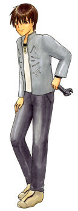

|
|
|
|
|
|
| シルバーTANUKI たぬき |  | |
| 名前 / 年齢 | 証誠寺銀河（しょうじょうじぎんが） / 21歳 | |
| 誕生日 / 血液型 | 10月18日 天秤座 / Ａ | |
| 職業 | 大学生 | |
| 家族構成 | 父・慧、母、祖父、祖母 | |
|
理工系大学に通う大学生。現在三回生。 機械をいじっていれば幸せな、メカ大好き野郎。 自分で色々なマシンを作っておりTANUKIMOBILも彼の作である 寺の息子のため幼い頃から写経などをやらされていたので字や姿勢がとても美しい。 運動も得意で弓道と剣道もやっている。そのため結構モテる。が、本人は鈍いのであまり気付いていない。 |
||